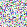
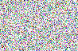
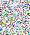
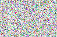
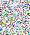
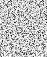
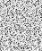

Artbitrary
While setting up a test suite for CBaaS, I needed to produce random images. An Arbitrary instance for JuicyPixel’s DynamicImage type is the way to do this in Haskell. While producing a list of random Pixels at different colors would have been enough to make the tests work, the output wouldn’t be very interesting to look at - it would just be colorful white noise.
What if we use QuickCheck’s ability to produce arbitrary functions, and pass an arbitrary (Int, Int) -> Pixel function into generateImage? Instead of fully random pixels, we would get random functions that determine a Pixel’s color from its location (it may seem like the difference between random Pixels and random functions producing Pixels are one and the same - but the random pixels case is actually an extremely specific function).
How does QuickCheck produce random functions? What would I expect the output to look like? I have no idea, although I’d to look into it. In the meantime, here are some examples.
An example image created with QuickCheck’s Arbitrary function generator
Another generated image seems to have horizontal bands in one color channel. What sort of (Int, Int) -> Pixel would produce it?
Different spatial frequencies in different color channels
An interesting common pattern: horizontal or vertical striations
A picture with a kind of even-odd structure in the rows
Not all of the pictures generated were this interesting. The majority looked like confetti-colored white noise, as you would expect from a function that throws away the input coordinates and returns a randomly colored pixel. Actually the last picture above is neat: half way through it changes spatial frequency.
Some things decidedly did not show up in the output. I found no examples where the x and y axes were independent (no straight horizontal bars, straight vertical bars, or checkerboards). No simple dependencies showed up either (e.g. if x == y then Blue else Green). Many were not encodable in PNG and so aren’t shown here. Many are solid black (QuickCheck focuses its testing effort on corner cases - I imagine \(x,y) -> Black is a value that gets picked often while other parameters (width, height) are varied. Below are all the pictures that came out in this test run, to give a sense of the distribution.
   
   

This is the code used to Generate an Image a for one of JuicyPixels Pixes types. It comes from on CBaaS. There’s nothing to it - all the magic is in QuickCheck’s Function module. Proxy isn’t important to this post - it’s used in my test suite to pick a particular Pixel type.
genImg :: (Pixel a, Arbitrary a) => Proxy a -> Gen (Image a)
genImg _ = do
wid <- choose (100, 300)
hgt <- choose (100, 300)
f :: Fun (Int,Int) a <- arbitrary
let img = generateImage (curry (apply f)) wid hgt
return img